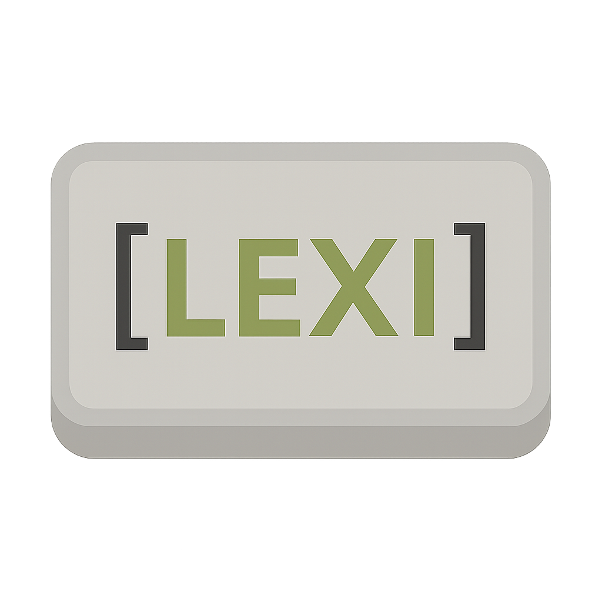

ZZX-LABS R&D // SOFTWARE
Lexiphor
Lexiphor is a PyQt5-based code formatter for C, C++, JS, Python, HTML, CSS, JSON, Go, Perl, Lua, R, Ruby, Rust, and Java, offering unified style presets and instant preview of reformatted source output.
CODE FORMATTER // MULTI-LANGUAGE
Lexiphor Browser Formatter
14 LANGUAGESPRESETSINSTANT PREVIEWNATIVE FORMATTERS OPTIONAL
Browser formatter provides deterministic structural formatting. Native repository integrations: Python → black C/C++/Java → clang-format JavaScript → jsbeautifier YAML → yamlfmt Those executables are not bundled in the static webpage.